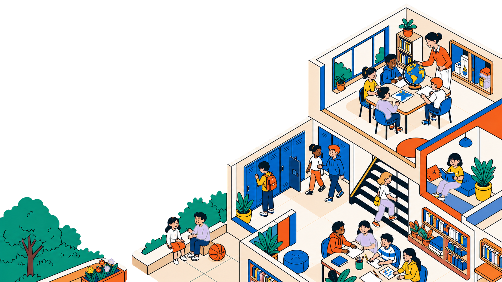
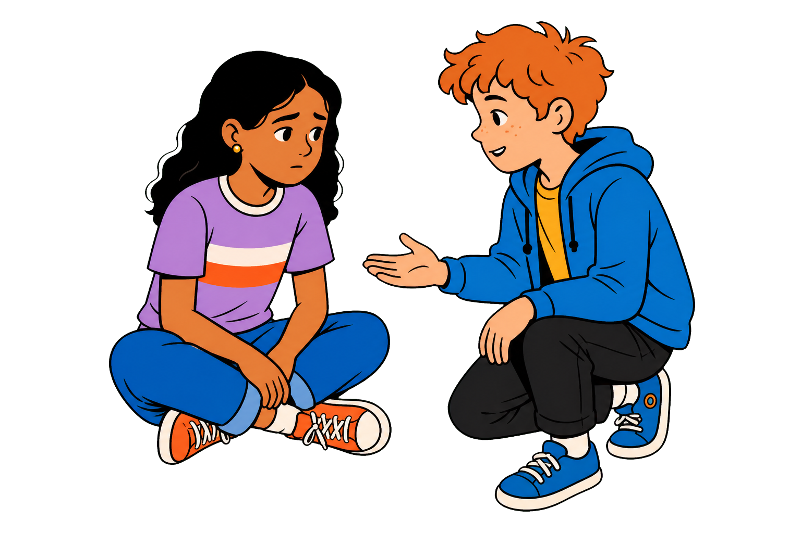
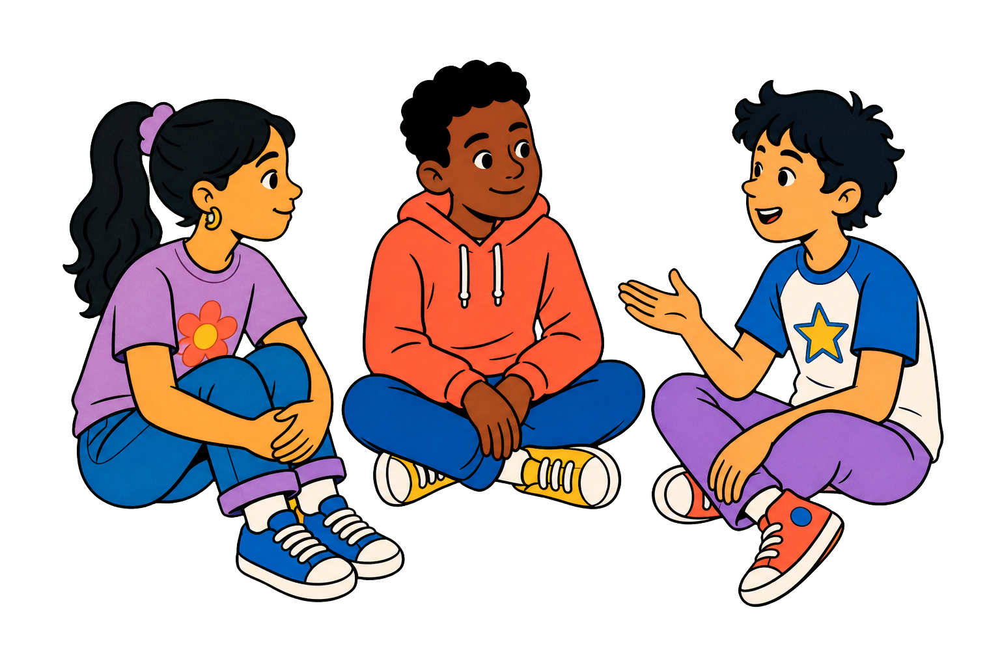

Listen
Share your context, priorities, and the challenges your community is navigating.

Harmony Initiative gives schools practical tools to prevent bullying, support digital wellbeing, and create everyday spaces where students feel heard.
Every school community is different. We start by understanding yours, then build a focused plan that educators can use with confidence.
Share your context, priorities, and the challenges your community is navigating.
Select the right combination of resources, training, and student support.
Bring practical routines into daily school life and keep the conversation going.
A safer school culture is built through the moments that happen every day: a teacher checking in, a student finding the words to ask for help, and a team knowing what to do next.

Choose one focused resource or combine programs into a practical whole-school plan.
Clear, shareable guidance that keeps prevention visible throughout the school year.
Useful conversation starters for healthier online habits and respectful digital spaces.
Actionable training that helps staff notice concerns and respond with confidence.
Participatory sessions that turn empathy and inclusion into everyday practice.

We turn big values into clear, repeatable practices. Educators gain language for difficult moments, students build confidence to speak up, and the whole school has a shared way to move forward.
Empathy firstStart with listening and understanding.
Prevention in practiceUse small routines before problems escalate.
Tools that travelSupport conversations in classrooms and online.
Still wondering where to begin? Start with a short conversation about your community.
Harmony Initiative is designed for schools and educators looking for practical ways to strengthen prevention, student support, and digital wellbeing.
Yes. The first conversation is about your context so you can choose the resources and activities that best fit your community.
It includes age-appropriate prompts for healthier online habits, respectful communication, and thoughtful conversations about digital spaces.
Use any “Book a Conversation” button, tell us a little about your school, and this demo will show the next-step confirmation.
Start a conversation
Share a few details and we’ll help identify a practical place to begin.
Request received
This is a portfolio demo, so no message was sent. In a live version, the school would receive a clear next step here.